Make a home.
Find what lies beneath.
A warm hearth. A curious cat. A world that keeps going down.
Settle in, then see how far your curiosity takes you.
The little things
make it home.
Build, craft, cook, and put down roots. A warm window and a familiar porch are waiting when the day’s exploring is done.
And Luna, your cat companion, is ready to follow you beyond the front door.
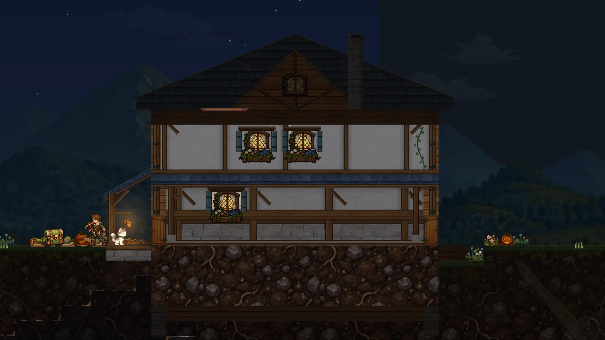
This is Bramblevein.
A closer look at the creatures, projects, and catches that give the adventure its character. Select an image to explore the details.

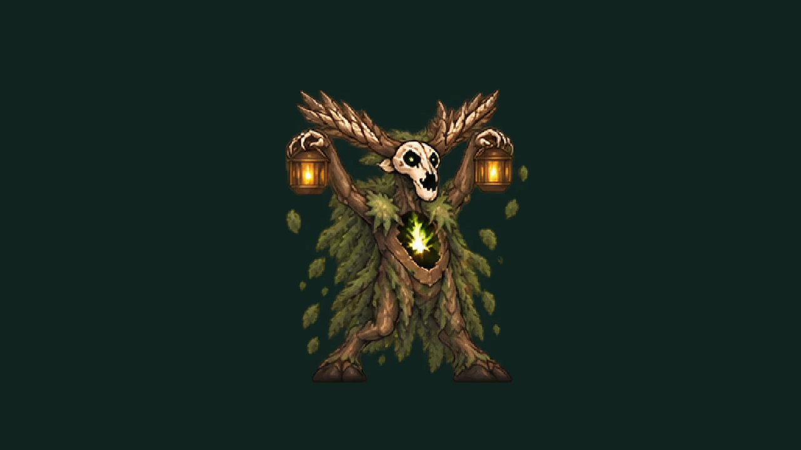
Gloam Warden

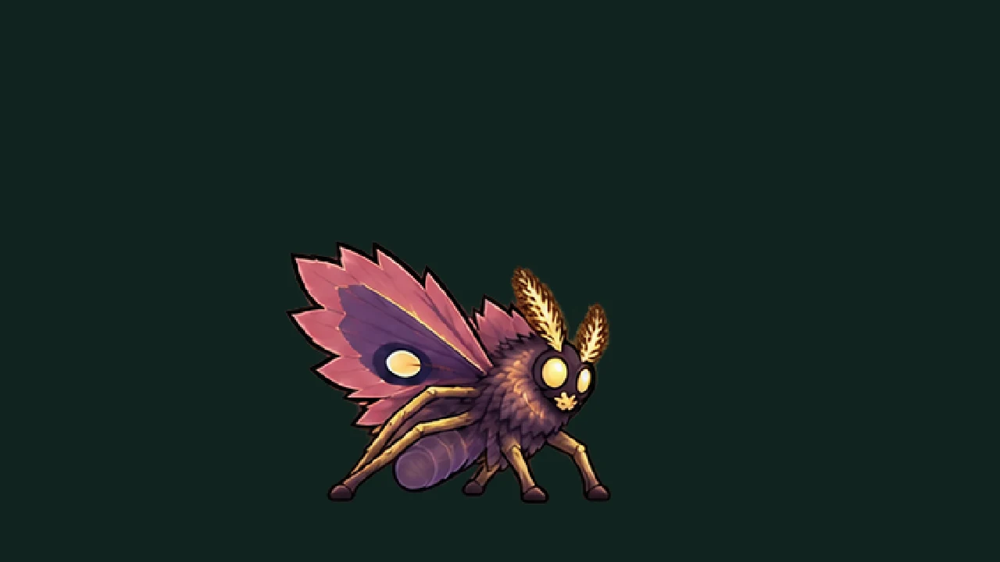
Vesper

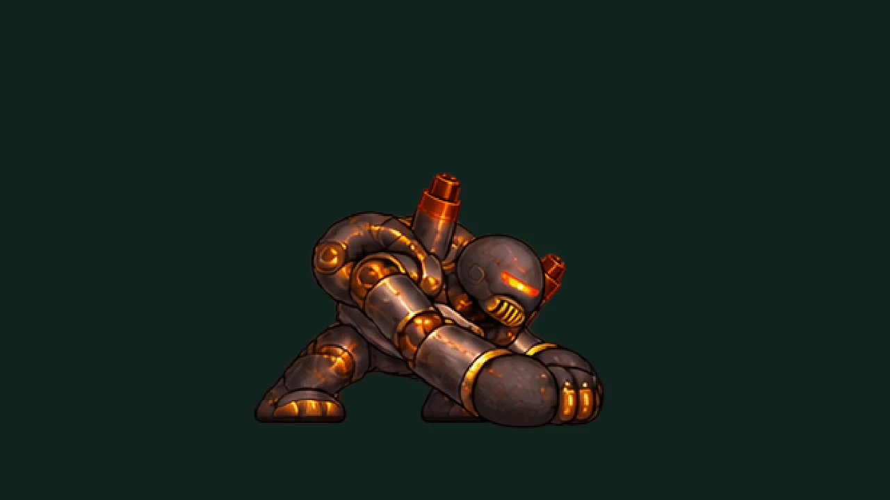
Cinder Colossus

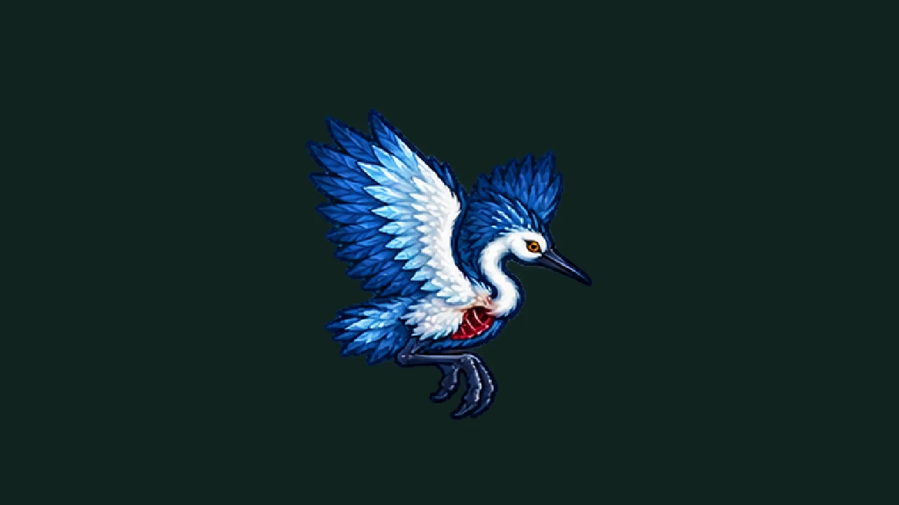
Rimekeeper

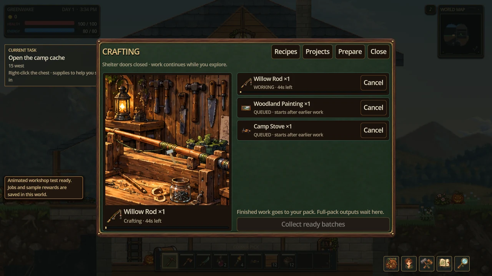
A little work. A lasting reward.
Plan your projects, queue up your next creation, and return to collect your finished work.

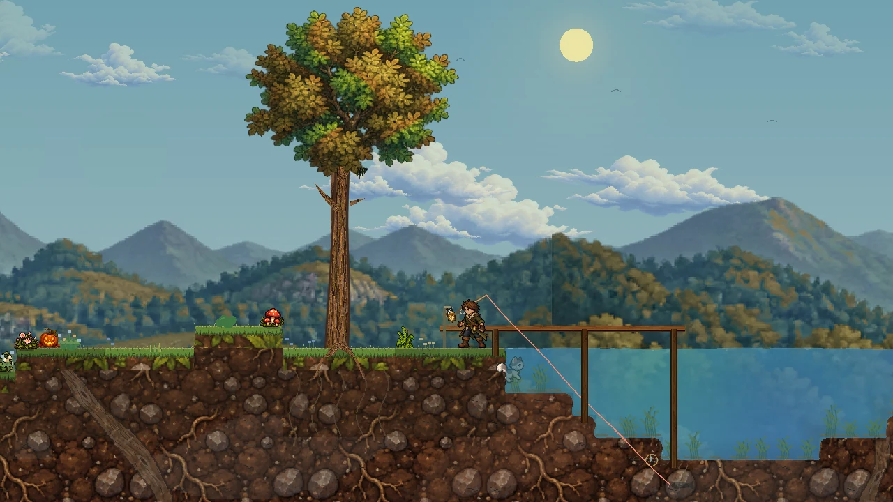
Just one more cast.
Read the water, play the line, and bring your catch home.
Take the long way home.
From frozen ground to sunlit sands, ancient crypts, and the roots beneath them. Actual in-game captures, with the HUD hidden.

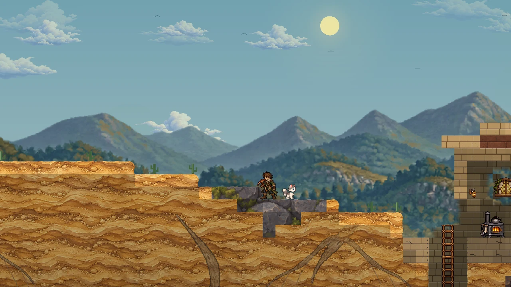

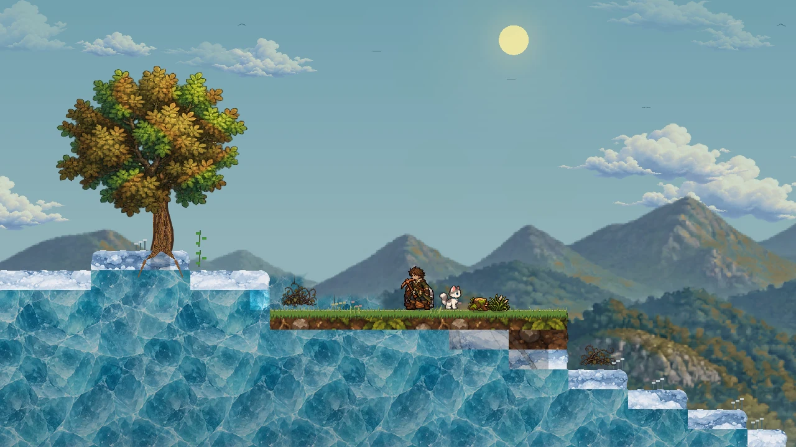

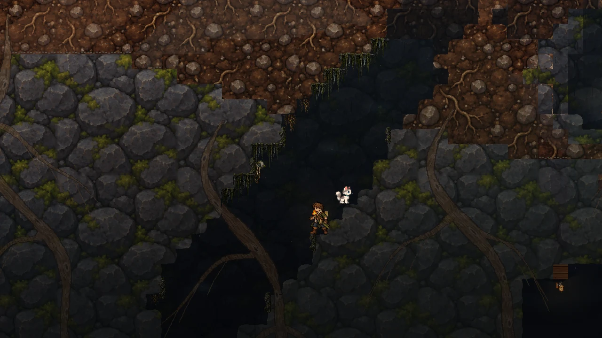

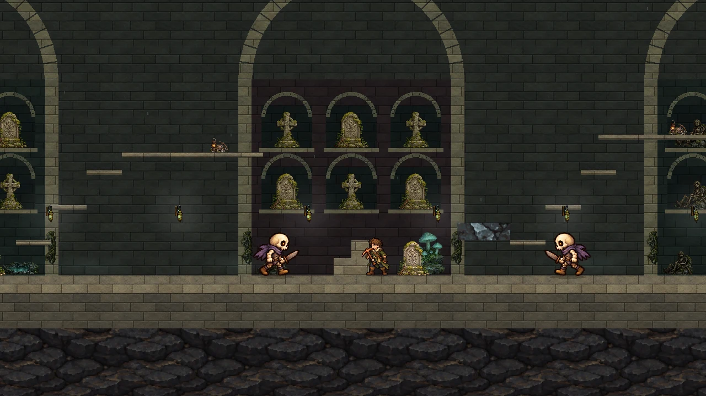
There’s a light
on at home.
Leave your boots by the hearth.
Or pick them up and see what’s
out there.
In development · Windows playtest
Hero illustration; gameplay
captures and posed creature previews shown below. Development
visuals may differ from the public build.